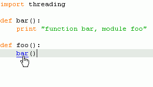

Editor
Editor works as you'd expect. You get
- syntax highlighting
- outline view with imports/functions/classes
- the parser errors get marked. The text next to the parser errors is a bit cryptic, but hey, at least you know where the error is.
- Editor tries to deal with tabs/spaces sensibly. You can set the preference to your preferred coding style.
- Navigation: keyboard shortcuts to previous/next function
- comment/uncomment commands
- hyperlinks over functions//import :
If you press CTRL while mousing over function & import names you'll get a hyperlink to their definition. The hyperlinking only works for:
- functions defined in the same file
- imports that are on your import path. The import path includes python.exe/Lib, if you've defined python executable in your pydev:debug preferences.
